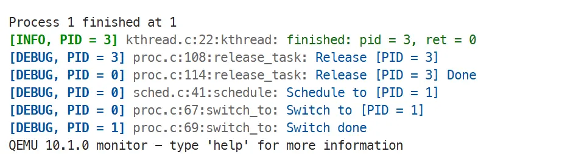

Lab 2：抢占式内核线程调度¶
Estimated time to read: 15 minutes
DDL
- 代码、报告：2025-11-04 23:59
- 验收：2025-11-11 实验课
实验简介¶
术语：进程、线程与 Task（任务）
在理论课上，我们明确定义了进程和线程。而在工程中，实现并不会那么死板。请你阅读下面的文段，了解在 Linux 和本实验的语境中这些术语的含义：
As you will see later, Linux has a unique implementation of threads: It does not differentiate between threads and processes.To Linux, a thread is just a special kind of process.
Another name for a process is a task. The Linux kernel internally refers to processes as tasks. In this book, I use the terms interchangeably, although when I say task I am generally referring to a process from the kernel’s point of view.
上面的文段来自 Linux Kernel Development，一本经典的 Linux 内核开发入门书籍。
具体来说：
- Linux 系统调用
clone()可以创建新的 Task，传入的参数将决定新 Task 具有怎样的性质：CLONE_FILES | CLONE_VM | CLONE_FS：表示新 Task 与父 Task 共享文件系统、内存空间和文件描述符表，这样的 Task 符合我们对线程（Thread）的定义。- 不使用上面的参数：表示新 Task 拥有独立的文件系统、内存空间和文件描述符表，这样的 Task 符合我们对进程（Process）的定义。
- 在调度器看来，只有 Task，没有进程和线程的区别。
那为什么本实验叫做「内核线程」不叫「内核任务」呢？因为历史上一直把运行在内核态的 Task 叫做内核线程（Kernel Thread）。
现在你已经理解在实验中这些术语的区分并没有那么严格，接下来阅读实验内容时就不用扣字眼了😉。
在 Lab1 中，我们已经让内核能够启动并处理时钟中断。但是如果没有进一步的机制，操作系统仍然只能在 CPU 上执行单个任务（即 start_kernel 函数）。本次实验的目标是：实现抢占式内核线程调度，让多个任务能够在一个 CPU 上通过时间复用的方式交替运行。
要完成这一目标，我们需要逐步解决以下几个问题：
-
如何在内核中管理物理内存？（理论课第八章内容 - 主存）
在后续实验里，我们需要动态分配各类数据结构。但是操作系统无法使用
malloc等标准库函数，那么问题来了：- 操作系统如何在裸机环境下动态分配内存？
- 为什么我们不能直接线性地“挖一块”内存？碎片化如何解决？
实验框架提供了一个简化版 Buddy System 物理内存分配器。同学们需要理解它的基本原理，并学会通过接口分配和释放物理页。
Buddy System 仅能实现物理页分配，无法满足对象粒度的分配需求。因此，我们还需要实现一个空闲链表缓存（free list cache），用于高效地分配内核对象。
-
如何管理进程？（理论课第三章内容 - 进程）
任务交替运行的核心在于上下文切换（context switch）。要让任务 A 运行完一段时间后交出 CPU，再切换到任务 B，必须保存 A 的上下文，并在之后恢复它。
- 上下文具体包含哪些内容？
- RISC-V 调用约定和中断机制如何影响上下文切换？
- 如何实现抢占？
解决完上下文切换的基本问题后，我们需要为每个 Task 设计一个数据结构（即理论课介绍的 PCB，Process Control Block），用于保存上下文和其他属性。并且还需要实现进程的创建和销毁机制，从而让内核能够动态地管理多个任务。
-
调度器应该如何工作？（理论课第五章内容 - 调度算法）
有了内存和进程管理，接下来就能够实现调度器。调度器的任务是：
- 根据调度算法选择下一个要运行的任务
- 调用上下文切换代码，将 CPU 控制权交给它
本次实验中，我们将先实现一个简单的时间片轮转（Round Robin）调度器。
Part 0：环境配置¶
更新代码¶
现在你位于 lab1 分支。你需要创建 lab2 分支，合并上游的代码：
下面的合并说明供同学们解决合并冲突时参考：
- 新增实验相关：
- 内存管理代码
mm.h，在 Part1.2 介绍 - 链表代码
list.h，在 Part1.3 介绍 - 空闲链表缓存代码
cache.h，在 Part1.4 介绍 - 进程管理相关实验代码
proc.h，在 Part1.5 介绍 - 内核线程代码
kthread.h，在 Part1.6 介绍 - 调度器代码
sched.h，在 Part4 介绍 - 几个测试样例
test.h、test_*.c在对应的 Task 介绍
- 内存管理代码
-
新增其他：
-
日志系统，见
log.h- 自动识别并打印日志位置的文件名和行号
- 支持日志级别（DEBUG、INFO、WARN、ERROR），可以通过修改
log.h的LOG_LEVEL宏来控制输出的详细程度 -
框架已经添加了部分调试日志，同学们可以将
LOG_LEVEL设置到LOG_LEVEL_DEBUG来查看，例图如下： 日志输出示例 每行日志的前缀固定格式为：
[等级, 当前进程] 文件名:行号:函数名:。 -
建议同学们多用这一日志系统而不是
printk
-
-
变更：
- CSR 相关内容从
sbi.h移动到csr.h - 时钟中断的间隔与调度算法有关，从 1s 改为
kernel/arch/riscv/include/sched.h中定义的TIMER_INTERVAL arch/riscv/kernel/include中的所有头文件现在都添加了 Doxygen 风格的详细的 API、数据结构、常量的注释，请同学们积极阅读和使用，文档不会再赘述。
- CSR 相关内容从
{kind=link}
更新镜像¶
本次镜像更新在 /etc/gitconfig 添加了 safe.directory 的配置，以解决代码库挂载到容器后的权限问题。这不是一个必要的修复，同学们可以视情况选择更新镜像。
Part 1：内存管理¶
物理内存空间¶
在学习如何管理物理内存之前，我们需要先弄清楚物理内存空间的概念。所谓内存空间，就是 CPU 可以直接寻址的地址范围，其大小通常由寄存器的位数决定。
- 例如，在 RV32 架构中，通用寄存器宽度为 32 位。当执行指令
ld x1, 0(x2)时，x2中存放的就是一个内存地址，它决定了x1要从哪里取数据。由于寄存器只有 32 位，最多能寻址 \(2^{32}\) 个字节，因此 RV32 的地址空间大小为 \(2^{32} \text{B} = 4 \text{GB}\)。 - 而在 RV64 架构下，寄存器宽度扩展为 64 位，对应的寻址空间理论上可以达到 \(2^{64} \text{B} = 2^{34} \text{GB} = 16 \text{EB}\)，远超当前实际硬件所能提供的内存容量。
在真实机器上，CPU 不可能真的拥有 16 EB 的内存。系统只会映射其中的一小部分地址作为物理内存，其余地址范围通常保留给外设、固件、I/O 总线等。在 Lab0 中，我们已经使用过 info mtree 命令来查看 QEMU 模拟的内存映射，接下来基于该结果进行具体分析：
-
RV64 架构的地址空间：
0000000000000000到ffffffffffffffff，总共 16 EB。 -
地址空间的具体划分：
-
某些区域存放固件或测试寄存器（如
mrom,sifive.test） -
某些区域对应定时器、PLIC（中断控制器）、串口、virtio 设备等外设
000000000c000000-000000000c5fffff (prio 0, i/o): riscv.sifive.plic 0000000010000000-0000000010000007 (prio 0, i/o): serial 0000000000101000-0000000000101023 (prio 0, i/o): goldfish_rtc要点：总线与内存映射 I/O
在计科的硬件课程中，大家可能还没有系统学习过总线 (Bus) 的概念。在这里我们只需要掌握最基本的理解：
- 总线是一种统一的通信通道，CPU、内存、外设都通过总线交互数据。
- 在现代计算机中，CPU 把一部分地址空间“划给”外设。当我们用普通的
load/store指令访问这些地址时，看似在访问内存，实际上是通过总线把数据读写到某个外设寄存器上。 - 举个例子：当我们向串口地址空间写入一个字节，硬件就会把它输出到终端；当我们读取 RTC（实时时钟）的寄存器，就能获得当前时间。
这就是所谓的 Memory-Mapped I/O（MMIO）：通过“内存地址空间”来操纵外设。
-
最关键的是，一部分地址范围被映射为 RAM，即实验中我们真正可以使用的物理内存。例如：
这表示从
0x80000000开始，有一段连续的物理内存区域被作为可用 RAM 提供给操作系统。
-
并且，在前述的实验中，我们也具体了解到 0x80000000-0x87ffffff 这 128MB 的物理内存的划分：
0x80000000-0x801fffff：OpenSBI 占用0x80200000-_ekernel：内核占用_ekernel-0x87ffffff：可以自由使用的物理内存
要点：物理内存空间
- RV64 的理论地址空间非常大，但实际可用的物理内存只是其中一小块。
- QEMU 会在
0x80000000起映射出一段 RAM，这是我们在实验中管理和使用的主要物理内存区域。 - 其他区域虽然也是“地址”，但对应的是固件或外设。CPU 通过读写这些地址，与硬件进行交互。
Buddy System¶
在理解了“我们有哪些物理内存”之后，下一步要思考的就是：如何高效地管理这段有限的物理内存。如果没有一套规则来分配和回收内存，那么很快就会出现“要么分配不出去，要么浪费大片空间”的问题。
最常见的一个困难是 内存碎片：
- 如果我们每次都按照请求大小直接分配，随着不断申请和释放，内存会被切得零零碎碎，即使总剩余空间很多，也可能无法满足一个大块内存的请求。
- 我们需要一种机制来让内存块尽量保持“规整”，方便回收和再次利用。
Buddy System 就是这样一种经典方案：
-
内存划分规则
- 假设我们有一段连续的物理内存，总大小是 \(2^n\) 页。
- 系统按 2 的幂次方大小划分内存块：1 页、2 页、4 页……直到 \(2^n\) 页。
- 每次分配时，如果需要的大小不是 2 的幂，会自动向上取整。
-
分配过程
- 找到能满足需求的最小块，如果没有，就从更大的块中“劈开一半”。
- 每劈一次，就会得到一对“伙伴块”（buddy）。
-
释放过程
- 当一个块被释放后，系统会检查它的伙伴是否空闲。
- 如果伙伴也空闲，就将两者合并成更大的块，并继续向上合并，直到不能合并为止。
- 这样可以减少碎片，使得大块空间能重新腾出来。
在实验框架里，我们已经为大家实现了一个简化版的 Buddy System 物理内存分配器（位于 mm.c / mm.h）。你无需从零开始写算法，只需要掌握它的使用方式。
请阅读 kernel/arch/riscv/include/list.h，了解 Buddy System 提供的接口。在实验里，你只需要通过这些接口申请或释放物理页，而不必关心内部具体是如何实现的。
例如：
void *a = alloc_page(); // 分配一页
void *b = alloc_pages(8); // 分配 8 页
free_pages(a); // 释放之前分配的一页
通过这一套接口，我们的内核就能在后续实验（如进程调度、内存管理、虚拟内存）中，稳定地使用物理页作为底层资源。
要点：Buddy System
- Buddy System 按 2 的幂次方划分内存块，方便合并和回收，减少碎片。
- 实验框架已经实现了简化版的 Buddy System，你只需通过
alloc_page(s)和free_pages()接口来分配和释放物理页。
侵入式双向循环链表¶
在内核中我们经常需要组织各种动态对象，例如空闲页链表、就绪任务队列、等待队列等。Linux 内核实现了侵入式双向循环链表（intrusive doubly-linked list）来高效地管理这些对象。
-
侵入式与泛型接口：
普通链表实现将数据嵌入在链表中，而侵入式实现将链表嵌入在数据中。前者每一种数据类型都需要单独定义链表节点结构体和相关的函数，导致代码重复且不易维护。后者不同类型可以复用同一套接口，这就是泛型（generic）。
侵入式链表struct list_head { struct list_head *next, *prev; }; #define LIST_HEAD_INIT(name) { &(name), &(name) } #define LIST_HEAD(name) struct list_head name = LIST_HEAD_INIT(name) static inline void list_add(struct list_head *new, struct list_head *head); static inline void list_del(struct list_head *entry) // 使用例 struct data_node_A { int data; struct list_head list; } a; struct data_node_B { char data; struct list_head list; } x; LIST_HEAD(list_A); LIST_HEAD(list_B); list_add(&a.list, &list_A); list_add(&x.list, &list_B);普通链表struct data_node_A { int* data; struct data_node_A *next, *prev; } a, *list_A = NULL; struct data_node_B { char* data; struct data_node_B *next, *prev; } x, *list_B = NULL; static inline void list_A_add(struct data_node_A *new, struct data_node_A *head); static inline void list_B_add(struct data_node_B *new, struct data_node_B *head); // 使用例 list_A_add(&a, list_A); list_B_add(&x, list_B); -
访问数据：
理解了上面的代码，你会发现盲点：
list_head结构体并不包含数据字段。怎么通过list_A这样的链表头，访问到data_node_A结构体呢？这就需要使用编译器魔法了：
container_of宏。它的定义如下：kernel/arch/riscv/include/list.h#define container_of(ptr, type, member) ({ \ const typeof( ((type *)0)->member ) *__mptr = (ptr); \ (type *)( (char *)__mptr - offsetof(type,member) );})编译器知道类型的大小，提供了
typeof()和offestof()。我们可以利用这些信息移动成员变量的指针，计算出包含该成员变量的结构体的起始地址。例如：
实现链表还给我们附带了一个惊喜：实现了队列。同学们在数据结构课上已经学过，双向循环链表实现了双端队列（deque），它支持在头尾两端高效地插入和删除节点。于是我们有实现多级反馈队列调度器所需的工具了。
要点：侵入式双向循环链表
- 侵入式链表将链表节点嵌入数据结构中，支持泛型接口，代码复用性强。
- 通过
container_of宏，可以从链表节点指针计算出包含它的结构体指针。
Task 1：实现双向链表¶
你应该早在大一的 C 语言课上就能秒杀双向链表了 😉。请补全 kernel/arch/riscv/include/list.h：
- 提示：观察
LIST_HEAD宏，你会发现这应该是一个带哨兵的双向链表。思考如果不带哨兵，它应当该如何实现？ - 补全
list_empty()。 - 补全
list_add()、list_add_tail()和list_del()。提示：一个优雅的做法是令list_add()和list_add_tail()都调用一个更底层的__list_add()。 - 补全
list_for_each宏。
完成条件
- 通过评测框架的
lab2 task1测试。
kernel/arch/riscv/kernel/test_list.c 中的 test_list() 函数用于测试你的链表实现。
空闲链表缓存¶
本节利用链表实现一个内核中非常常见的机制——对象缓存（object cache）。
在内核中，许多内核对象（如 task_struct、inode、vm_area_struct 等）会被频繁创建和销毁。如果动态创建都调用通用的内存分配器（如 Buddy System），会对性能产生较大影响，且容易引起内存碎片。
为了解决这些问题，Linux 内核引入了 Slab 分配器：它为每种类型的对象维护一个缓存池，将整页内存切分为多个固定大小的对象块，用链表管理这些空闲对象。换句话说，Slab 缓存层（kmem_cache）相当于物理页分配器（alloc_page()）之上的对象粒度的再分配层。
不过，Linux 的 Slab 实现更加复杂，感兴趣的同学可以阅读 Slab Layer - Linux Kernel Development Second Edition。在我们的教学实验中，只保留了它的核心思想：用空闲链表（free list）预分配缓存对象。
kernel/arch/riscv/include/cache.h 和 kernel/arch/riscv/include/cache.c 实现了 Slab 分配器，要求同学们阅读代码并理解其工作原理。
动手做：理解空闲链表
阅读 cache.h 和 cache.c，理解空闲链表缓存的实现。
画一幅图，展示相关的数据结构及其布局。
考点：内存管理与基础数据结构
- Buddy System 与对象缓存（kmem_cache）的职责边界分别是什么？分别适用哪些场景？
- 释放页框时，Buddy 为什么能“向上合并”？伙伴块（buddy）的地址如何根据当前块大小计算？
- 侵入式双向循环链表为何能实现“泛型”？
container_of如何从list_head*还原到宿主结构体指针？ - 实现
list_add/list_add_tail/list_del时，带哨兵循环链表有哪些易错点（例如自环、顺序、空表判断）？
Part 2：进程切换与 Trap 处理¶
本节我们探究实现用于切换进程上下文的汇编函数 __switch_to()，以及进程切换与 Trap 处理的相互影响。
进程切换：非抢占情况¶
让我们从最简单的不考虑 Trap 的情况开始。这种情况下没有时钟中断，进程切换仅能依靠进程主动调用 __switch_to() 完成，内核是非抢占式的。
设想这样一个场景：CPU 上正在运行 Task1，Task1 想调用 __switch_to() 切换到 Task2，然后 Task2 运行一段时间后再切换回来继续执行 Task1。__switch_to() 应该怎么设计？
Lab 1 Trap 处理的场景与此类似：可以将 _traps() 看作 __switch_to()，将 trap_handler() 看作 Task2。trap_handler() 执行完毕后，恢复 Trap 上下文就相当于 Task2 切换回 Task1。但进程切换与 Trap 有一个重要区别：Trap 可以发生在任何时候，因此 Trap 上下文是所有寄存器的状态；而 __switch_to() 是一个函数，它的调用者一定是遵守 RISC-V 调用约定的，因此不需要保存所有寄存器。示意图如下：
__switch_to() 的调用和返回路径
理解了这些，我们容易设计出 __switch_to() 需要保存的进程上下文：
ra：函数返回地址，我们需要它来返回到调用__switch_to()的位置sp、s0-s11：调用约定中规定的 callee-saved 寄存器
于是我们写出了进程上下文的数据结构：
struct thread_struct {
uint64 ra; // return address
uint64 sp; // stack pointer
uint64 s[12]; // callee-saved registers
};
那么这个结构体应该存放在哪里呢？具体存放的位置暂且按下不表，留到设计进程数据结构时再说。先假设调用 __switch_to() 时 a0 和 a1 分别指向 Task1 和 Task2 的 thread_struct 结构体，那么 __switch_to() 的实现就很简单了：
.globl __switch_to
__switch_to:
sd ra, 0(a0) // 保存 Task1 上下文
sd sp, 8(a0)
sd s0, 16(a0)
...
ld ra, 0(a1) // 恢复 Task2 上下文
ld sp, 8(a1)
ld s0, 16(a1)
...
ret // 返回到 Task2
还能再换个角度：站在 Task1 的角度看，调用
__switch_to()就像调用了一个空函数。它遵守 RISC-V 调用约定，但什么都没做，原路返回了。
但切换的目标 Task 2 的上下文从哪里来？对于目前不考虑 Trap 的场景来说，只有两种可能：
- Task 2 之前运行过，但主动调用
__switch_to()切换到别的进程。这种情况保存过进程上下文，能够顺利恢复。 - Task 2 是新创建的进程，尚未运行过。这种情况需要我们设计一个初始的进程上下文。
初始进程上下文的设计也很简单：令 ra 指向进程的第一条指令，__switch_to() 就会跳过去开始执行。如果要考虑向进程传递参数，可以利用 s0-s11 这些寄存器，然后设置一个蹦床函数（trampoline）来将其移动到 a0-a7 作为参数。事实上 Linux 就是这么实现 kthread 的初始上下文的，这个蹦床函数如下所示：
SYM_CODE_START(ret_from_fork_kernel_asm)
call schedule_tail
move a0, s1 /* fn_arg */
move a1, s0 /* fn */
move a2, sp /* pt_regs */
call ret_from_fork_kernel
j ret_from_exception
SYM_CODE_END(ret_from_fork_kernel_asm)
asmlinkage void ret_from_fork_kernel(void *fn_arg, int (*fn)(void *), struct pt_regs *regs)
{
fn(fn_arg);
syscall_exit_to_user_mode(regs);
}
从代码中可以看出，Linux 将 kthread 要运行的函数 fn 放在了初始进程上下文的 s0 寄存器中，将参数 fn_arg 放在了 s1 寄存器中。蹦床函数 ret_from_fork_kernel_asm 将它们分别移动到 a1 和 a0，然后调用 ret_from_fork_kernel 去具体执行。
进程切换：抢占与 Trap 处理¶
当我们希望实现内核抢占（Kernel preemption）时，情况就变得复杂了起来，需要综合考虑时钟中断、系统调用等 Trap 情况。
切换、调度、Trap 与抢占的关系¶
先理清几个概念：
-
进程切换（context switch）：
由上文讨论的
__switch_to()执行，完成进程上下文切换 -
调度（schedule）：
由将在 Part 4 介绍的
schedule()执行，使用调度算法选择要切换到的进程，并调用__switch_to()完成切换 -
Trap：
CPU 异常和中断引发，可能发生在任何时候，由
_traps()处理，负责保存和恢复 Trap 上下文 -
抢占：
在进程不主动执行切换或调度的情况下，能够打断当前进程的执行触发调度，从而实现时间复用
这几个概念的联系是：抢占是通过在 Trap 退出路径上视情况调度实现的。接下来的几节我们将分析这一关系。
内核中不能被 Trap 的部分¶
首先，我们要明确内核中不能被 Trap 的部分。回忆 RISC-V 中断机制，进入 Trap 处理时，CPU 会自动执行下面的操作禁用中断：
sstatus.SPIE = sstatus.SIEsstatus.SIE = 0
此外，我们设计 _traps() 时会确保不触发异常。所以，Trap 处理过程是不会被 Trap 的。
其他部分似乎都可以被 Trap，毕竟我们设计 _traps() 时就考虑到它随时可能发生，会将所有整数寄存器保存到 Trap 上下文中。
抢占的时机¶
要实现抢占，只能寄希望于（时钟）中断打断 Task1 的执行，才有机会切换到 Task2。接下来我们用排除法和反证法寻找这个机会在哪里：
- Trap 上下文恢复过程显然不能切换，否则就破坏 Trap 上下文了。
- Trap 上下文恢复完成（离开
_traps()）后，就回到 Task 1 没机会切换进程了。 -
Trap 处理过程（
trap_handler()）不能__switch_to()，因为中断还没处理完。Trap 的处理过程指的是从
xIP.i置 1、中断 Pending 开始，到该 Pending 位被置 0 为止。以 Lab1 涉及的 Trap 情况为例：- 时钟中断的处理从 SEE 发现
stimecmp > stime然后将STIP置 1 开始，到sbi_set_timer()将STIP置 0 结束 - 软件中断的处理从
SSIP置 1 开始，到clear_ssip()将SSIP置 0 结束。
如果 Trap 处理未完成就切换：
- 因为切换不涉及
SIE，新的进程继续运行在中断禁用的状态，无法响应新的中断。 -
如果非要打开
SIE，那么 CPU 马上会再次触发该 Trap，再次进入_traps()，重复循环下去导致栈sp溢出。你是否想起这一情况与 Lab1「动手做」探究的为什么能进入
printk()类似。printk()的情况比较幸运，sp最初位于 OpenSBI 保护的地址，爆栈也没有破坏 OpenSBI 的代码和数据，最终走到了0x7???????之类的位置（并未探究这是什么地方，反正既不是内核也不是 OpenSBI）。但是当我们将sp设置为内核栈后，爆栈向下增长将直接破坏内核数据（data 段）和代码（text 段），导致系统崩溃。
Tip
没有理解上面论述的同学，请仔细阅读 RISC-V 特权级手册 3.1.9. Machine Interrupt (mip and mie) Registers 部分，彻底理解中断触发和清除的机制。
- 时钟中断的处理从 SEE 发现
通过上面的讨论，我们只能将 __switch_to() 安排在 trap_handler() 的末尾。
进程切换：引入并发¶
在上两节的论述中，我们已经说明了进程切换的两种可能性：
- 非抢占式：发生时机确定，在进程主动调用
__switch_to()时发生； - 抢占式：发生时机不确定，只要发生（时钟）中断，
trap_handler()就会调用__switch_to()，发生进程切换。
关于 __switch_to() 和 schedule() 关系的说明
事实上，上面的论述不完全准确。同学们将在 Task 4 中实现schedule() 函数，我们并不会主动调用 __switch_to()，而是调用 schedule() ，让它来接管 __switch_to() 函数。同学们在这里只需要知道：在完整完成实验后，进程是否切换将由调度器控制。
因此，事实上，进程切换的可能性来自两个方面：
- （时钟）中断何时触发是未知的，它可能在代码运行的任意时刻发生；
schedule()是否会触发__switch_to()是未知的，调度器有可能在计算后决定不调度。
既然进程切换在任意时刻都有可能发生，我们必须要考虑进程切换引入的新问题——并发 (Concurrency)。
在单核处理器上，虽然两个进程不能在同一时刻真正被执行，但由于调度器（尤其是抢占式调度）的存在，一个进程的执行可能在任意时刻被中断，切换到另一个进程。这种执行流交错进行，仿佛它们在同时运行，被称为伪并发 (pseudo-concurrency) 。
这种并发访问共享数据时可能导致问题。如果一个进程在访问某个共享资源（如全局变量、共享内存）的过程中被非自愿地抢占，而新调度的进程也去访问同一个资源，就可能导致数据损坏或不一致，这种情况被称为竞争条件 (Race Condition) 。
我们把访问共享资源的代码区域称为临界区 (Critical Region)。为了保证系统的稳定，我们必须识别出这些临界区，并使用保护机制来防止并发访问。那么，我们具体应该如何保护临界区呢？
解决方案
我们在上面已经分析了进程切换的可能性，在单核操作系统中，内核并发的主要来源是中断（只有它可能导致抢占式调度）。因此，解决临界区问题最直接的方法就是关闭中断。
在单核环境中关闭中断，意味着当前执行的线程不能被（时钟）中断抢占。因此，如果我们能做到：
- 在进入临界区之前关闭中断
- 在离开临界区时再开启中断
便能够避免当前执行临界区代码的线程被打断，从而保证任意时刻只有一个线程在执行临界区内的代码。
更严格的理由
在理论课上，同学们将会学习临界区问题的三个条件（互斥访问、有限等待、空闲让进），大家可以思考在单核环境下关闭中断是否满足解决这三个条件。由于理论课的进度暂时滞后于实验内容，这里暂时不展开讨论。
多核处理器 (SMP) 带来的新挑战
在前面的讨论中，我们明确了在单核处理器上，关闭中断是解决内核并发（抢占）问题的有效手段。
然而，在多核处理器（Symmetrical Multiprocessing, SMP）上，我们就没有那么幸运了。
在 SMP 系统上，两个或多个处理器可以在完全相同的时间执行内核代码，这被称为“真正并发” (true concurrency)，而不再是单核上的“伪并发”。
请思考这种情况：
- CPU 0 进入了一个临界区。
- CPU 0 为了防止被抢占，执行了“关闭中断”指令。
- 与此同时，CPU 1 也在执行内核代码，并且它决定进入同一个临界区。
此时，CPU 0 关闭中断只影响了 CPU 0 自己，它无法阻止 CPU 1 的运行。CPU 0 和 CPU 1 会同时访问和修改临界区中的内容，这同样会导致竞争条件。
因此，在多核环境中，关闭中断不是一个有效的同步机制。我们必须引入更强大的锁，例如自旋锁 (Spin Locks)，来确保在任何时刻只有一个 CPU 核心能进入特定的临界区。
例子 1：内核数据结构¶
让我们考虑一个具体的例子。在我们的内核中，所有进程的任务控制块（PCB）都可能通过一个全局的链表 task_list 来管理。当一个进程结束（例如调用 do_exit）时，我们需要将其从 task_list 中移除。这个移除操作（list_del）通常涉及多个指令（下面的代码仅作演示，实验框架中的真实实现可能不同）：
请你思考这种情况：
- 当内核正在执行第 1 步时，突然发生了一个时钟中断。
- 中断处理程序
trap_handler调用了schedule，切换到了另一个进程。 - 如果这个新进程恰好也要遍历
task_list，它会读到一个处于“中间状态”、已经损坏的链表（prev_task的next指针是对的，但next_task的prev指针还是错的），这可能带来非预期的行为，甚至导致系统崩溃。
这就是一个典型的竞争条件：task_list 是共享数据，而修改 task_list 的代码（如 list_del）就是一个临界区。为了保护它，我们必须在修改链表之前关闭中断，并在修改完成后重新开启中断。
实现正确的临界区保护
我们在实验框架中已经为大家考虑所有可能的临界区并进行了保护。你可以阅读 csr.h 中的 interrupt_save() 和 interrupt_restore() 函数，理解它们是如何操作 sstatus 寄存器来开启和关闭中断的。
值得注意的有两点：
- 我们在进入临界区前保存了中断状态，并在离开临界区时恢复原有状态，而不是简单地开启中断。这是为了防止嵌套临界区的问题。
- 临界区保护应该总是交给调用者来完成，而不是由被调用的函数（如
list_del）来完成。这样可以让调用者根据具体情况决定是否需要保护。
例子 2：进程切换过程¶
一个更微妙的临界区是我们用于进程切换的 __switch_to() 函数本身。上文我们将 __switch_to() 放置在 _traps() 的末尾以实现抢占，那么它还能被 Trap 吗？请你思考这样的场景：
- Task 1 主动调用
__switch_to()切换到其他任务，我们把这次调用称为 A - 在这个
__switch_to()过程中，时钟中断触发，进入_traps()处理 - Trap 处理完成后，因为我们安排了时钟中断触发进程切换，于是又开始调用
__switch_to()切换到其他任务，我们把这次调用称为 B
请问 A 和 B 都能顺利完成吗？请你思考后再展开下面的答案。
答案
B 保存的上下文覆盖了 A 保存的上下文，A 再也没办法恢复了。示意图如下：
因此 __switch_to() 不能被抢占，进入 __switch_to() 时必须禁用中断。
如果整个
_traps()不会触发__switch_to()，那么__switch_to()应当是可以抢占的。但如果_traps()不触发进程切换，时钟中断还有意义吗？还能实现抢占吗？这一点留给有兴趣的同学思考，助教也没有深入思考过，欢迎讨论。
恭喜你
至此，你已经彻底理解了内核抢占的原理（注意这与用户态抢占不同，仅用户态抢占的实现很容易）。Linux 在 2.6 版本才引入内核抢占。当其他班级还在 Linux 0.11 时，你已经领先了 12 年😉。
更多资料
讨论所有切换情况¶
然而到这里，我们并没有解决所有的问题。请你注意：进程的切换可能带来中断状态的变化，如果新切换的进程并没有开启中断，那么它就无法响应时钟中断，进而无法被抢占。
下面，我们讨论抢占、主动切换、初始上下文共 \(2 \times 3 = 6\) 种切换情况：
| 情况 | Task 1 状态 | Task 2 状态 | 用 __switch_to() 切换后 Task 2 会怎么样运行 |
|---|---|---|---|
| 1 | 抢占 | 抢占 | 通过 _traps() 返回，其中 sret 重新开启中断 |
| 2 | 抢占 | 主动切换 | 通过 schedule 返回，返回路径上手动开启中断 |
| 3 | 抢占 | 初始上下文 | 返回路径上没有其他地方开启中断 |
| 4 | 主动切换 | 抢占 | 通过 _traps() 返回，其中 sret 重新开启中断 |
| 5 | 主动切换 | 主动切换 | 通过 schedule 返回，返回路径上手动开启中断 |
| 6 | 主动切换 | 初始上下文 | 返回路径上没有其他地方开启中断 |
- 情况 1 和 4 没有问题，因为
_traps()会重新开启中断。 - 情况 2 和 5 也没有问题，因为
schedule是临界区，我们会在它的调用前后手动关闭和开启中断。 - 情况 3 和 6 有问题，因为初始上下文的蹦床函数中没有开启中断。因此我们需要在蹦床函数中手动开启中断以解决这一问题。
至此，我们彻底完成了内核抢占情况下进程切换的设计。这一部分思维量较大，建议同学们现在阅读代码理解：
kernel/arch/riscv/kernel/proc.c中的switch_to()实现kernel/arch/riscv/kernel/entry.S中的__switch_to()和__kthread()实现
检查 _traps()的实现
在 Lab1 中，_traps() 必须要保存的仅有除 caller-saved 寄存器之外的所有整数寄存器。
但是看完上面的内容，同学们应该注意到，现在 _traps() 执行过程也会被打断，通过 trap_handler() 切换到其他进程。这时候，我们要思考还有哪些寄存器是必须要保存的。
请同学们思考后再打开下面的答案。
考点：进程切换与 Trap
__switch_to()为什么只需要保存ra、sp、s0–s11？- 蹦床函数（
__kthread）是如何运行的？请说明ra、sp、s0/s1的设置意图。 - 为什么
__switch_to()不能被抢占？ - 为什么调度点必须放在
trap_handler()尾部？若在 Trap 处理中切换会导致哪些具体问题？ - 为什么
_traps()需要额外保存sstatus？sret依据SPIE如何决定是否重新开启中断？ - 六种切换情形中，哪些路径上需要谁来“开启中断”？请逐一给出理由。
进程数据结构和内存布局¶
理解完进程切换机制，我们终于可以开始设计进程的数据结构了。我们需要存储的信息包括：
uint64_t pid进程 IDstruct thread_struct thread进程的上下文-
void *stack进程的栈如果不给每个进程独立的栈，则会产生下图所示的局面：
多个进程复用同一栈会导致冲突 细心的同学会注意到，这样的设计也让不同进程的 Trap 上下文分离了，存储在各自的栈上。
-
struct sched_entity sePart 4 实现的调度器使用 struct list_head list所有进程数据结构都组织成一个双向循环链表，方便调度器遍历
于是我们设计出了 struct task_struct 结构体来保存这些信息：
struct task_struct {
uint64_t pid;
uint64_t state;
struct sched_entity se;
struct thread_struct thread;
struct list_head list;
};
内存布局如下所示：
此外，我们令 tp（RISC-V 调用约定称为 Thread Pointer）寄存器始终指向当前 CPU 上运行的进程的 task_struct 结构体，这样内核就能轻松地通过 tp 访问当前进程的信息。我们运用 Lab1 中内联汇编的知识，将该寄存器绑定到变量 current 方便在 C 代码中使用：
Task 2：设置初始进程¶
请补全 kernel/arch/riscv/kernel/proc.c 文件中的 task_init() 函数，实现初始化第一个内核进程（init 进程）的功能。具体要求如下：
- 使用
kmem_cache_create()创建task_struct对象缓存池，并分配一个新的task_struct结构体作为初始进程。 - 初始化该进程的各项字段，包括
pid、stack、state、se（调度实体，见 Part4）等。 - 将该进程设置为当前运行进程，并将其加入进程链表（
task_list）。
完成后，start_kernel 将作为第一个 Task，进而能够通过它切换到其他进程，为后续进程管理和调度打下基础。
完成条件
- 通过评测框架的 Lab2 Task2 测试。本 Task 涉及调度相关字段，同学们可能需要阅读 Part4 后再回来做才能通过测试。
本测试会在进入 start_kernel() 时检查 tp 及其指向的 task_struct 结构体是否正确初始化。
Part 3：进程生命周期¶
本节我们实现 kthread 的创建、运行和退出，完成进程的生命周期管理。
进程复制与加载¶
Windows 使用 CreateProcess() 创建进程，这个接口庞大且僵化，还有好几个衍生版本：
BOOL CreateProcessA(
[in, optional] LPCSTR lpApplicationName,
[in, out, optional] LPSTR lpCommandLine,
[in, optional] LPSECURITY_ATTRIBUTES lpProcessAttributes,
[in, optional] LPSECURITY_ATTRIBUTES lpThreadAttributes,
[in] BOOL bInheritHandles,
[in] DWORD dwCreationFlags,
[in, optional] LPVOID lpEnvironment,
[in, optional] LPCSTR lpCurrentDirectory,
[in] LPSTARTUPINFOA lpStartupInfo,
[out] LPPROCESS_INFORMATION lpProcessInformation
);
而 Unix 进程模型将其分为两步：
fork()：复制当前进程，创建一个新进程exec()：在当前进程的上下文中加载并执行一个新的程序
在 fork() 后 exec() 前，可以自由配置新的进程。当内核引入新的功能时，也无需修改 fork/exec 的接口。这样复制 + 加载的设计比直接创建更灵活，体现了组合优于复杂接口的 Unix 哲学。
fork() 和 exec() 是提供给用户态程序的系统调用接口，将在 Lab4 进行封装。本次实验在内核态中实现相应的底层功能：
copy_process()：拷贝当前 Taskkernel_thread()：修改前者创建的 Task，在其中运行新的函数
Task 3：实现进程复制与加载¶
请补全 kernel/arch/riscv/kernel/proc.c 文件中的 copy_process() 和 kernel_thread() 函数，实现内核线程的创建流程：
copy_process(struct task_struct *old)：复制当前进程的数据结构，分配新的内核栈，分配唯一的进程号，并初始化调度相关字段（见 Part4），将新进程加入进程链表。-
kernel_thread(int (*fn)(void *), void *arg)：- 回忆 Part2 非抢占情况，我们讨论了如何设计初始进程上下文，通过
struct thread_struct向蹦床函数传递要运行的函数和参数。 -
和 Linux 一样，我们规定内核线程执行的函数的接口如下所示：
基于此规定，框架已经实现了用于内核线程的蹦床函数
__kthread()，请你理解它的工作原理。 -
请你在
kernel_thread()中调用copy_process()创建新进程，并根据对__kthread()的理解设置新进程的初始上下文。
- 回忆 Part2 非抢占情况，我们讨论了如何设计初始进程上下文，通过
补全后，内核将能够通过 kernel_thread() 创建新的内核线程，并正确初始化其执行环境。
完成条件
- 通过评测框架的
lab2 task3测试。与 Task2 一样，本 Task 涉及调度相关字段，同学们可能需要阅读 Part4 后再回来做才能通过测试。
本测试会检查 start_kernel 中调用 kernel_thread(kthreadd, NULL) 创建的进程上下文是否正确。
进程退出与销毁¶
当一个内核线程结束任务、退出执行，与其相关的资源需要被销毁，这包括 struct task_struct 结构体及其通过指针引用的成员（如内核栈）等。
进程没有办法析构自己，这一逻辑很容易理解。如果进程析构自身，那么析构工作也是进程运行的一部分。只要进程仍在运行状态，释放相关资源就可能导致悬空指针等问题。因此可以将进程的析构设计为退出和销毁两个阶段：
do_exit()：进程完成所有任务后调用该函数，将自身状态置为TASK_DEAD，然后主动发起调度，此后它再也不会被调度运行，可以安全释放release_task()：调度离开上一步的进程后，随时可以释放其资源
此外，我们还会实现一个辅助函数：
-
kthread()：内核线程的 Wrapper，只是为了帮助在每个内核线程结束后调用do_exit()，这样就不用让所有工作函数都显式调用do_exit()了。noreturn int kthread(void *arg) { struct kthread_create_info *info = arg; int (*threadfn)(void *) = info->threadfn; void *data = info->data; int ret = threadfn(data); do_exit(ret); }一个例外是
kthreadd线程（在刚刚的 Task 中见过），它是第一个内核线程，负责创建其他内核线程。它永远不会退出，因此不需要kthread()包装。
由于 do_exit() 依赖于调度器，这部分的任务留到 Part 4 一起完成。
考点：进程数据结构与生命周期
- 为什么每个任务必须有独立内核栈？
current与tp的绑定带来什么便利？在 C 代码中使用它时要注意什么？task_init()至少需要初始化哪些关键字段，如何把它设为当前任务并加入task_list？copy_process()哪些字段应该“复制”，哪些必须“重新初始化”？kernel_thread()如何构造新任务的初始上下文才能正确跳到__kthread并传参？
Part 4：调度器¶
到本节，我们终于可以把进程切换这个词升级为调度了。我们将研究调度算法，由它选择要切换的进程。
时间片轮转调度¶
RR 调度算法已经在理论课上讲过了，这里把 PPT 内容再贴一遍：
基本思路：通过时间片轮转，提高进程并发性和响应时间特性，从而提高资源利用率。
RR 算法：
- 将系统中所有的就绪进程按照 FCFS 原则，排成一个队列。
- 每次调度时将 CPU 分派给队首进程，让其执行一个时间片 (time slice) 。
- 在一个时间片结束时，暂停当前进程的执行，将其送到就绪队列的末尾，并通过上下文切换执行就绪队列的队首进程。
- 进程可以未使用完一个时间片，就出让 CPU（如阻塞）。
考虑 struct sched_entity 的设计。对于 RR 调度来说，需要保存的信息就是进程的时间片（剩余多少时间）。此外下文提及的 test_sched.c 测例需要使用累计时间来安排进程的创建顺序，额外新增一个字段，但它并非调度算法所必需。
struct sched_entity {
uint64_t runtime; /**< 时间片 */
uint64_t sum_exec_runtime; /**< 已执行时间 */
};
要点：RR 调度算法的实现
为了在我们的框架中正确实现 RR 调度算法，请注意以下几个要点：
- 调度顺序：
- 进程的调度遵循 FCFS 的原则，因此在将进程加入任务队列时，应确保新进程被添加到队列的末尾。
- 当进程的时间片耗尽，应当以合适的方式确定下一个被调度的进程（可以通过修改队列或者设计恰当的遍历顺序实现）。
- 时间片管理：
- 每个进程在被调度时，都会获得一个固定的时间片（
TIME_SLICE）。 - 在每次
schedule()调用时，应检查当前进程的剩余时间片并进行更新。（在计算消耗时间片的大小时，我们并没有严格地区分调度器执行的时间开销和进程执行的时间，因此你可以忽略非进程本身（process()函数）执行的部分，把“当前时间”同时作为上一进程的结束时间和下一进程的开始时间）
- 每个进程在被调度时，都会获得一个固定的时间片（
- 进程资源管理：
- 在调度器中，应当确保已经退出的进程（
TASK_DEAD）的资源被正确释放。
- 在调度器中，应当确保已经退出的进程（
- 调度间隔：
- 时钟中断的间隔与调度算法有关，我们依赖于时钟中断进行时间片管理和进程抢占，因此你需要修改时钟中断频率，从原来的 1s 改为
kernel/arch/riscv/include/sched.h中定义的TIMER_INTERVAL
- 时钟中断的间隔与调度算法有关，我们依赖于时钟中断进行时间片管理和进程抢占，因此你需要修改时钟中断频率，从原来的 1s 改为
Task 4：实现时间片轮转调度和抢占¶
- 请补全
kernel/arch/riscv/kernel/sched.c文件中的schedule()函数，实现时间片轮转调度算法。 - 请补全
kernel/arch/riscv/kernel/proc.c文件中的do_exit()和release_task()函数，实现内核线程的退出与销毁。 - 在
trap_handler()的末尾调用schedule()，从而启用内核抢占，彻底完成本次实验。
完成条件
- 通过评测框架的
lab2 task4测试。
该测试会在 release_task() 处打断点，观测整个进程调度过程，检查进程的创建和退出是否符合上述时间片轮转调度算法计算的结果。
👿 评测场景可能与手动运行场景有所不同，因为 GDB 的存在可能改变程序运行的时序逻辑，触发隐藏的临界区问题，导致程序崩溃（当然也不排除单纯只是你的调度算法实现有问题）。同学们遇到问题时也可以查看 tests/console.log 日志，观察评测时的程序输出是否符合你的预期。
动手做：计算响应比
除了基本的 RR 调度，实验框架还模仿了 Linux 的线程管理机制，引入了 异步内核线程创建。
具体流程如下：
- 设置一个队列，用于存放待创建的内核线程请求；
kthreadd线程不断从该队列中取出请求，创建其他内核线程；- 每次创建完成后，
kthreadd会立即让出 CPU（用完时间片），因此它几乎不占用调度时间； kthread_create()用于提交创建请求，它会立即返回，不会等待线程真正启动（这点与 Linux 不同）。
框架提供的 test_sched.c 模拟了理论课中的调度考题：
| 进程 | 请求创建时间 | 运行时间 |
|---|---|---|
| 1 | 0 | 10 |
| 2 | 1 | 1 |
| 3 | 4 | 2 |
| 4 | 5 | 1 |
| 5 | 8 | 5 |
这里的“请求创建时间”指 kthread_create() 被调用的时刻，并不代表线程立即进入就绪队列。
当你完成所有任务后，运行内核，观察该测例的输出结果，计算 5 个进程的平均周转时间、平均等待时间和响应比。
值得一提的是，本「动手做」的运行结果在不同平台（x86、arm）、甚至同一平台上都会有所不同。同学们做完下一个「动手做」后应该能理解其原因，当你理解了这一点才算是抓住了现实中的调度算法的精髓。
动手做：探究时间片对调度结果的影响
同学们可能会发现，开启/不开启调试时的调度结果不同。这是因为 GDB 在单步执行或频繁检查寄存器、内存状态时，会显著拖慢模拟器运行，导致所有指令变慢，可以等效理解为 CPU 的频率降低了。请你解释为什么 CPU 频率变低会影响调度结果。
此外，也很容易想到 TIME_SLICE、TIMER_INTERVAL 两个宏的值如果设置不当，可能会导致调度结果发生各种各样的变化。请你思考可能发生的各种情况，然后尝试调整这两个宏的值，观察日志验证你的猜想。
提示：这些问题本质上是在比较：
- 现实世界的时间（wall-clock time）：对应 RISC-V 架构中的
time寄存器，QEMU 会保证其始终按 10MHz 的速率增长 - 内核的逻辑时间：与调度算法的设计有关，在 RR 调度中它体现在时间片的消耗上
考点：调度与抢占
- RR 调度中时间片如何消耗与补充？当时间片耗尽时如何选择下一个任务？此选择与进程链表遍历顺序的关系是什么？
- 抢占从哪里触发？进入和离开
__switch_to()前后，对中断位（SIE/SPIE）分别有什么要求？为什么？ do_exit()与release_task()分别在何处调用、各自职责是什么？为什么不能让进程“自我销毁”？kthreadd有何特殊性？为什么几乎不占用调度时间？异步创建对公平性/饥饿有什么影响？
结语：Lab2 和 Linux 调度器的历史¶
其实，实验框架最开始实现的是优先级调度，但是优先级调度算法很容易造成饥饿（Starvation），与 kthreadd 的异步创建机制冲突。举例：
- 新的创建请求放入队列
kthreadd线程从队列中取出请求，创建新线程- 默认情况下新线程与
kthreadd线程优先级相同，但 PID 较大 - 在优先级相同的情况下，
schedule()的调度算法始终选择 PID 较小的进程（因为是从进程链表头开始遍历的） - 新线程永远无法被调度运行
使用理论课上讲的老化（动态优先级）可以解决饥饿问题，但不公平（Fairness）的问题仍然十分严重，难以平衡各个进程的响应时间。比如 kthreadd 可能需要很长的累积等待时间才能被调度运行，严重影响内核进程异步创建的能力。最终实验框架选用了 RR 调度，至少能平衡各个进程的响应时间。但由于没有实现阻塞和唤醒机制，RR 调度的优势也无法体现出来。
总的来说，Lab2 的内核抢占和进程管理已经成功改革到 Linux 2.6 时代，但调度算法和同步机制还没跟上，所以同学们做 Lab 时可能会觉得有些地方的实现不够合理，欢迎你来找助教讨论。
要想让 kthreadd 真正发挥作用，需要实现与 Linux 的完全公平调度器（Completely Fair Scheduler, CFS）类似的调度算法。感兴趣的同学可以自行阅读相关资料，它最终应该会在 Bonus B 中实现。
最后简单介绍一下 Linux 的调度算法演进史：
| 版本 | 调度算法 | 参考链接 |
|---|---|---|
| 2.6 前 | \(O(n)\) 调度器（其他班级实现的） | sched.c - kernel/sched.c - Linux source code 0.11 - Bootlin Elixir Cross Referencer |
| 2.6.0-2.6.22 | \(O(1)\) 调度器 | The Linux Scheduling Algorithm - Linux Kernel Development Second Edition |
| 2.6.23 - 6.6 | CFS 调度器 | CFS Scheduler — The Linux Kernel documentation |
| 6.6 - 今 | EEVDF 调度器 | EEVDF Scheduler — The Linux Kernel documentation |
| 开发中 | sched_ext 通过 BPF 程序定制任意调度算法 |
Extensible Scheduler Class — The Linux Kernel documentation |